.jpg){kind=link}
America’s premier day hikes lead travelers through some of the country’s most spectacular landscapes, including mountains, deserts, forests, canyons, waterfalls, and coastal scenery.
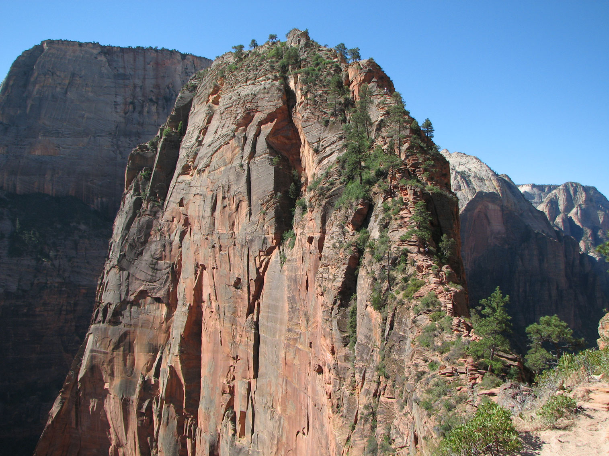
User:Bearclause, Public domain, via Wikimedia Commons; Image Size Adjusted

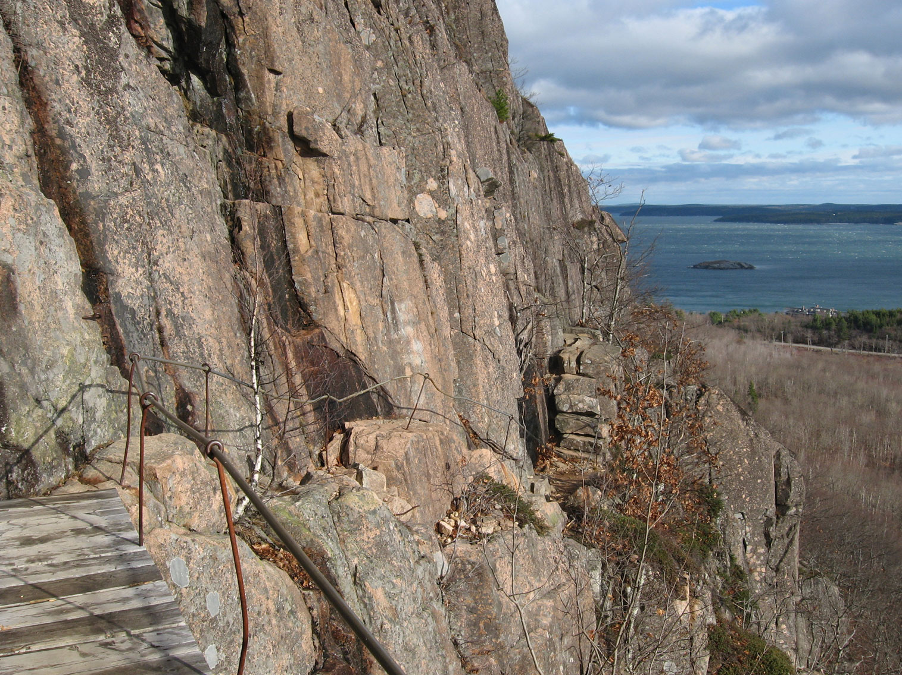
Fredlyfish4derivative work: User:Maps and stuff (rotated 2.5 degrees clockwise to level horizon; cropped white space after rotation, to same 4:3 ratio of original; increased brightness in darker areas; saved as a high quality JPG), CC BY-SA 4.0, via Wikimedia Commons; Image Size Adjusted
.jpg){kind=link}
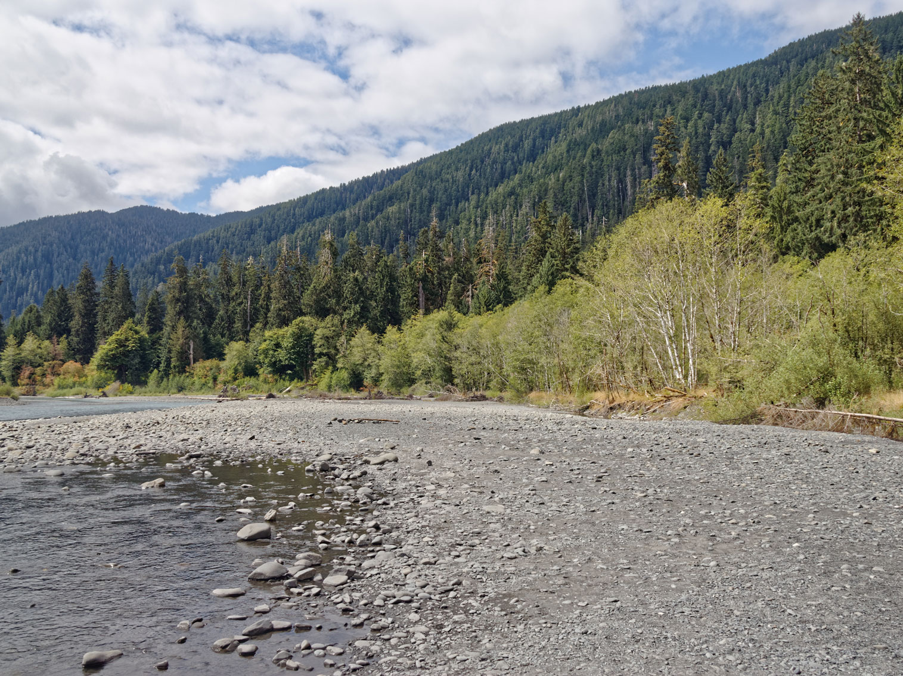
Dirtsc, CC BY-SA 3.0, via Wikimedia Commons; Image Size Adjusted

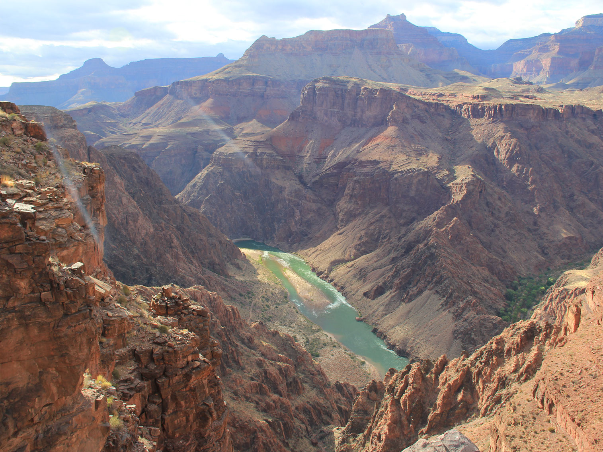
Imranchwilder, CC BY-SA 4.0, via Wikimedia Commons; Image Size Adjusted

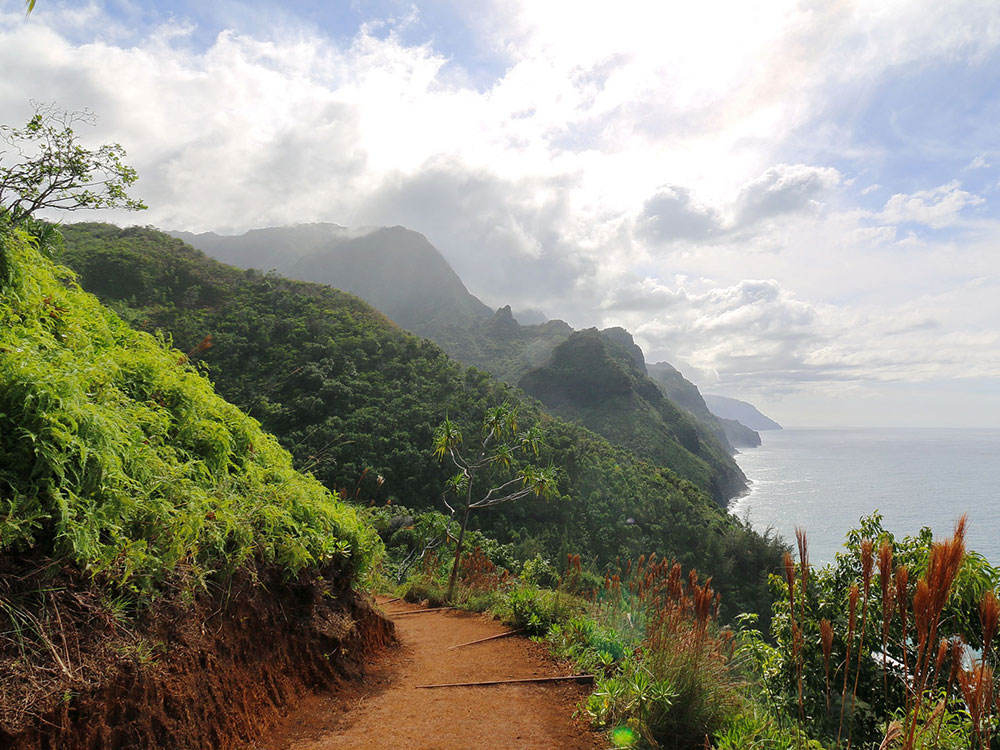
Robert Linsdell from St. Andrews, Canada, CC BY 2.0, via Wikimedia Commons; Image Size Adjusted
_(16714377519).jpg){kind=link}
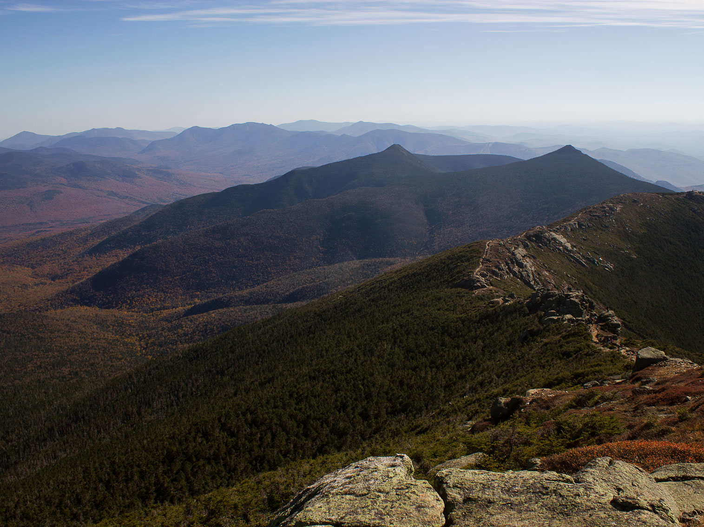
Cory Tanner ctannerweb, CC0, via Wikimedia Commons; Image Size Adjusted
.jpg){kind=link}
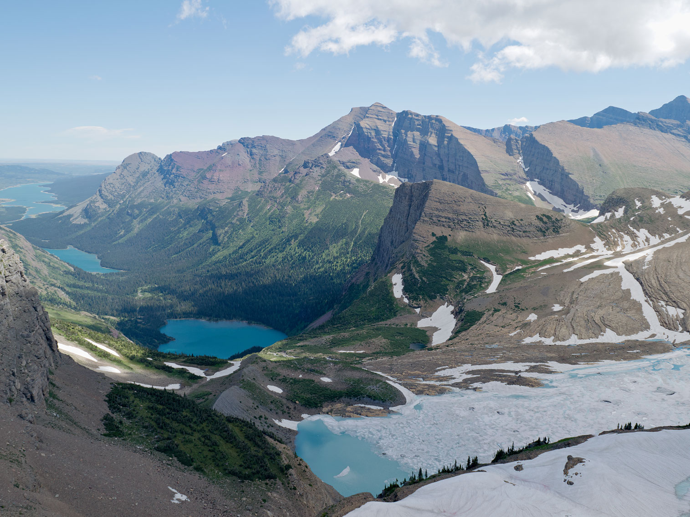
Trougnouf (Benoit Brummer), CC BY 4.0, via Wikimedia Commons; Image Size Adjusted

Diliff, CC BY-SA 3.0, via Wikimedia Commons; Image Size Adjusted

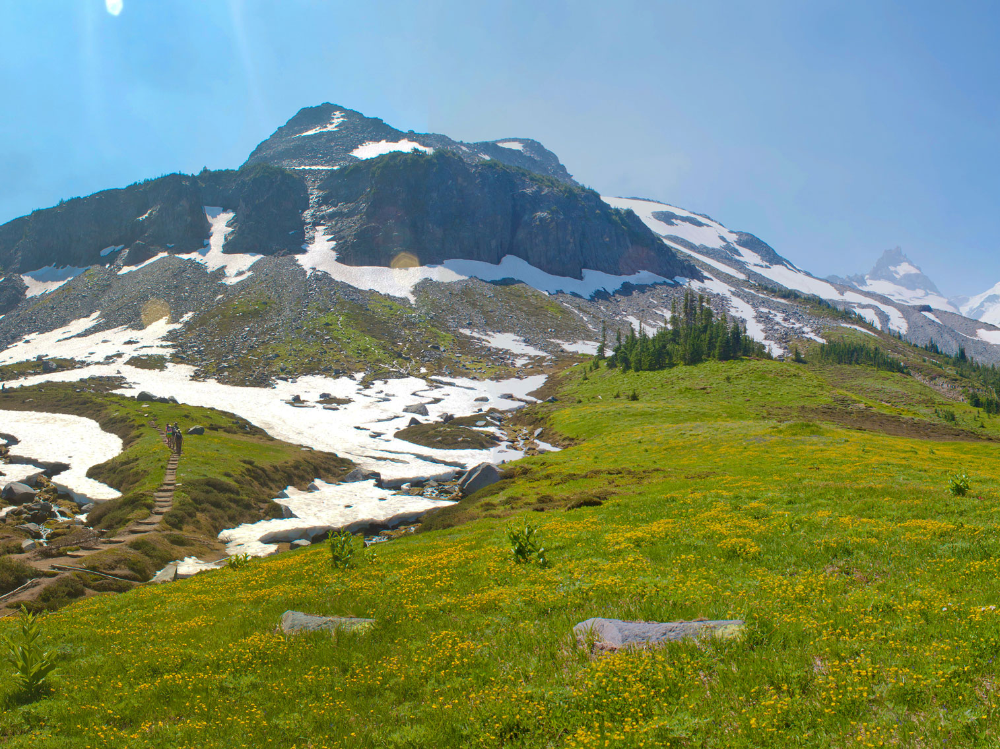
Abhinaba Basu from Redmond, United States, CC BY 2.0, via Wikimedia Commons; Image Size Adjusted
.jpg){kind=link}
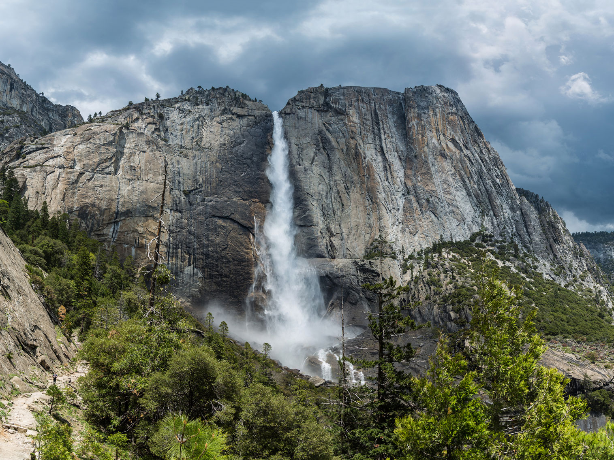
Diliff, CC BY-SA 3.0, via Wikimedia Commons; Image Size Adjusted


Dsdugan, CC0, via Wikimedia Commons; Image Size Adjusted

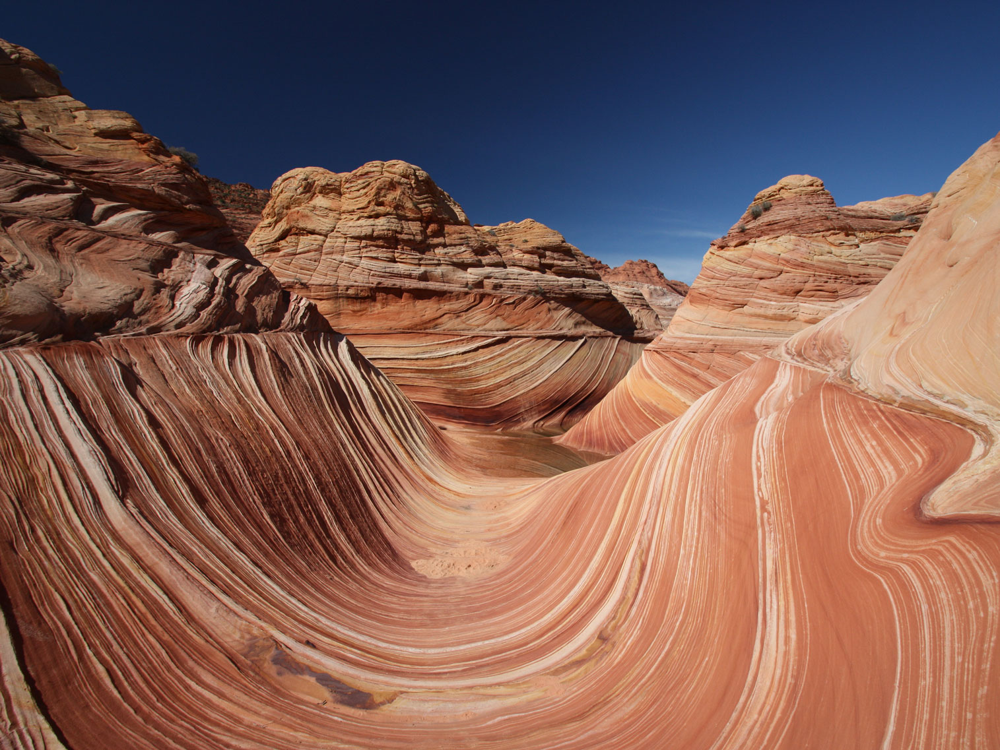
Paul Kordwig Post.eingang, CC BY-SA 3.0, via Wikimedia Commons; Image Size Adjusted

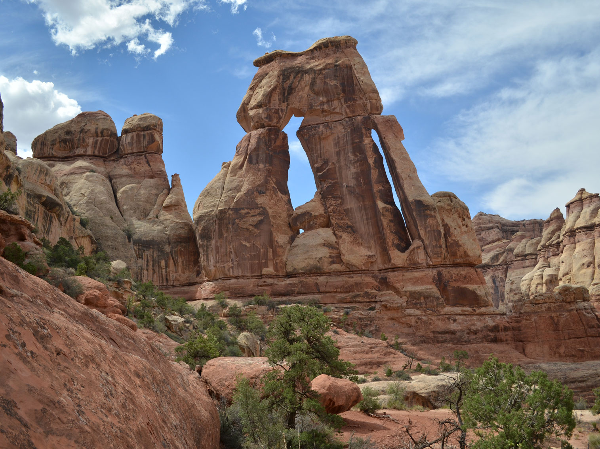
RichieB_pics, CC BY 2.0, via Wikimedia Commons; Image Size Adjusted
.jpg){kind=link}
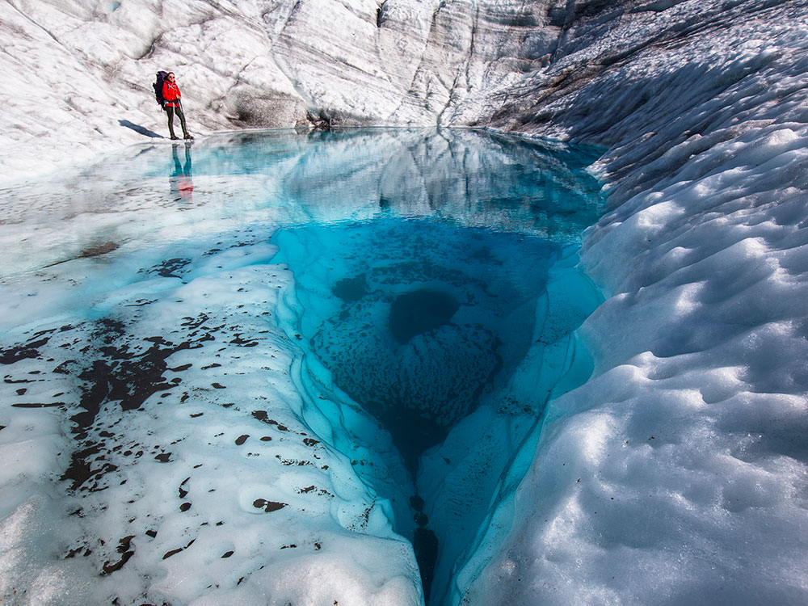
National Park Service, Alaska Region, Public domain, via Wikimedia Commons; Image Size Adjusted
_(21587560302).jpg){kind=link}


Shenandoah National Park from Virginia, Public domain, via Wikimedia Commons; Image Size Adjusted
.jpg){kind=link}
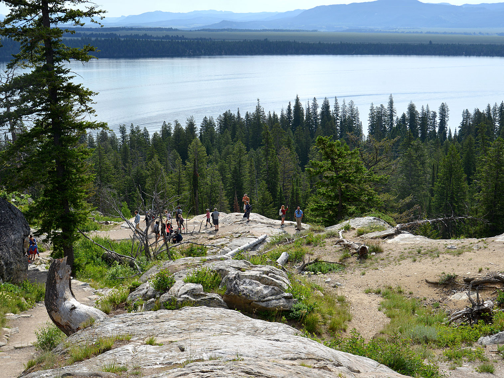
G. Edward Johnson, CC BY 3.0, via Wikimedia Commons; Image Size Adjusted